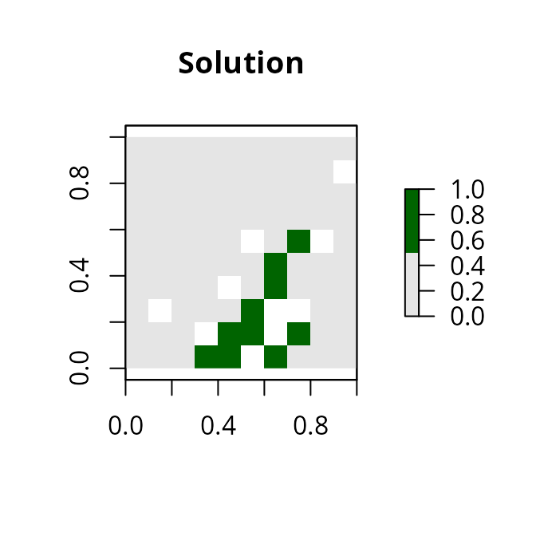

Gurobi Installation Guide
Richard Schuster
2021-11-16
Source:vignettes/gurobi_installation.Rmd
gurobi_installation.RmdIntroduction
Gurobi is the most powerful and fastest solver that the prioritizr R package can use to solve conservation planning problems. This vignette will walk you through the process of setting up Gurobi on your computer so that you can use it to solve conservation planning problems. If you encounter any problems while following the instructions below, check out the official Gurobi documentation.
Obtaining a license
Gurobi is a commercial computer program. This means that users will need to obtain a license for Gurobi before they can use it. Although academics can obtain a special license at no cost, individuals that are not affiliated with a recognized educational institution may need to purchase a license. If you are an academic that is affiliated with a recognized educational institution, you can take advantage of the special academic license to use Gurobi for no cost. Once you have signed up for a free account you can request a free academic license.

Once you accept the Terms Of Service you can generate a license.

Now, copy and save the grbgetkey XXXXXXXX-XXXX-XXXX-XXXX-XXXXXXXXXXXX command for later use.
Downloading the software
After obtaining a license, you will need to download the Gurobi installer to your computer. To achieve this, visit the Gurobi downloads web page and download the correct version of the installer for your operating system.
Software installation
The process for installing the Gurobi software depends on the operating system on your computer. Fortunately, Gurobi provide platform-specific “Quick Start Guides” for Windows, MacOS, and Linux systems that should help with this. Briefly, on Windows systems, you just need to double-click on the Gurobi installer, follow the prompts, and the installer will automatically handle everything for you. On Linux and MacOS systems, you will need to manually extract the downloaded file’s contents to a folder, move the extracted contents to a suitable location (typically /opt/gurobi), and update your system’s variables so that it knows where to find Gurobi (i.e. the PATH variable).
Additionally, if you are using RStudio on a Linux system, you might need to add the following text to a Rstudio configuration file (located at /etc/rstudio/rserver.conf).
rsession-ld-library-path=/opt/gurobi650/linux64/libAfter installing the Gurobi software suite on your computer, you will need to activate your license.
License activation
Now we will activate the Gurobi software using the license you obtained earlier. Please note that the correct set of instructions depends on your system and license. To activate the license, simply copy and paste the grbgetkey command into your computer’s command prompt or terminal (note that Windows users can open the command prompt by typing cmd in the search box and pressing the enter key). After running the grbgetkey command with the correct license code, you should see output that resembles the following screen shot.

Next, we will now check that the license has been successfully activated. To achieve this, we will try running Gurobi directly from the command line. Note that the following commands assume you are using version 8.0.0 of Gurobi, and so you will need to modify the command if you are using a more recent version (e.g. if using version 9.1.2, then use gurobi912 instead of gurobi800 below).
On Windows systems, users can type in the following system command to check their license activation.
gurobi_cl c:\gurobi800\win64\examples\data\coins.lpOn Linux and MacOS systems, users can type in the following system command.
gurobi_cl /opt/gurobi800/linux64/examples/data/coins.lpIf the license was successfully activated, you should see output that resembles the screen shot below.

After activating the license, you now need to install the gurobi R package. This is so that you can access the Gurobi software from within the R statistical computing environment, and enable the prioritizr package to interface with the Gurobi software.
R package installation
Now we will install the gurobi R package. This package is not available on the Comprehensive R Archive Network and is instead distributed with the Gurobi software suite. Specifically, the gurobi R package should be located within the folder where you installed the Gurobi software suite. We will install the gurobi R package by running the following R code within your R session. Note that the following code assumes that you are using version 8.0.0 of Gurobi, and so you will need to modify the code if you are using a more recent version (e.g. if using version 9.1.2, then use gurobi912 instead of gurobi800 below).
Assuming you installed Gurobi in the default location, Windows users can install gurobi R package using the following code.
install.packages("c:/gurobi800/win64/R/gurobi_8.0-0.zip", repos = NULL)Similarly, Linux and MacOS users can install the gurobi R package using the following code.
install.packages(file.path(Sys.getenv("GUROBI_HOME"),
"R/gurobi_8.0-0_R_x86_64-pc-linux-gnu.tar.gz"),
repos = NULL)Next, you will need to install the slam R package because the gurobi R package needs this package to work. Users of all platforms (i.e. Windows, Linux, and MacOS) can install the package using the following R code.
install.packages("slam", repos = "https://cloud.r-project.org")Let’s check that the gurobi R package has been successfully installed. To do this, we can try using the gurobi R package to solve an optimization problem. Copy and paste the R code below into R.
## Loading required package: slam
# create optimization problem
model <- list()
model$obj <- c(1, 1, 2)
model$modelsense <- "max"
model$rhs <- c(4, 1)
model$sense <- c("<", ">")
model$vtype <- "B"
model$A <- matrix(c(1, 2, 3, 1, 1, 0), nrow = 2, ncol = 3,
byrow = TRUE)
# solve the optimization problem using Gurobi
result <- gurobi(model, list())## Gurobi Optimizer version 9.5.0 build v9.5.0rc5 (linux64)
## Thread count: 4 physical cores, 8 logical processors, using up to 8 threads
## Optimize a model with 2 rows, 3 columns and 5 nonzeros
## Model fingerprint: 0xba2d0add
## Variable types: 0 continuous, 3 integer (3 binary)
## Coefficient statistics:
## Matrix range [1e+00, 3e+00]
## Objective range [1e+00, 2e+00]
## Bounds range [0e+00, 0e+00]
## RHS range [1e+00, 4e+00]
## Found heuristic solution: objective 2.0000000
## Presolve removed 2 rows and 3 columns
## Presolve time: 0.00s
## Presolve: All rows and columns removed
##
## Explored 0 nodes (0 simplex iterations) in 0.00 seconds (0.00 work units)
## Thread count was 1 (of 8 available processors)
##
## Solution count 2: 3 2
##
## Optimal solution found (tolerance 1.00e-04)
## Best objective 3.000000000000e+00, best bound 3.000000000000e+00, gap 0.0000%
# print the solution
print(result$objval) # objective## [1] 3
print(result$x) # decision variables## [1] 1 0 1If you see the outputs for result$objval and result$x and you don’t see any error messages, then you have (1) successfully installed the Gurobi software suite, (2) activated a valid license, and (3) successfully installed the gurobi R package. If do see an error message, then you might have missed a previous step or something might have gone wrong while installing Gurobi or activating the license. In such cases, try going back through this vignette and repeating the previous steps to see if that fixes the issue.
Solving a prioritzr problem with Gurobi
If you successfully installed the Gurobi software suite and the gurobi R package, you can now try solving conservation planning problems using the prioritzr R package. Although the prioritizr R package should automatically detect that Gurobi has been installed, you can use the function add_gurobi_solver to manually specify that Gurobi should be used to solve problems. This function is also useful because you can use it to customize the optimization process (e.g. specify the desired optimality gap or set a limit on how much time should be spent searching for a solution).
Finally, to check that everything has been installed correctly, we will use the Gurobi software suite to solve a reserve selection problem created using the prioritzr R package.
library(prioritizr)
# formulate the problem
p <- problem(sim_pu_raster, sim_features) %>%
add_min_set_objective() %>%
add_relative_targets(0.1) %>%
add_binary_decisions() %>%
add_gurobi_solver()
# solve the problem
s <- solve(p)## Gurobi Optimizer version 9.5.0 build v9.5.0rc5 (linux64)
## Thread count: 4 physical cores, 8 logical processors, using up to 1 threads
## Optimize a model with 5 rows, 90 columns and 450 nonzeros
## Model fingerprint: 0x6442bf6e
## Variable types: 0 continuous, 90 integer (90 binary)
## Coefficient statistics:
## Matrix range [2e-01, 9e-01]
## Objective range [2e+02, 2e+02]
## Bounds range [1e+00, 1e+00]
## RHS range [3e+00, 8e+00]
## Found heuristic solution: objective 2337.9617505
## Presolve time: 0.00s
## Presolved: 5 rows, 90 columns, 450 nonzeros
## Variable types: 0 continuous, 90 integer (90 binary)
## Found heuristic solution: objective 2332.1003790
## Root relaxation presolved: 5 rows, 90 columns, 450 nonzeros
##
##
## Root relaxation: objective 1.931582e+03, 12 iterations, 0.00 seconds (0.00 work units)
##
## Nodes | Current Node | Objective Bounds | Work
## Expl Unexpl | Obj Depth IntInf | Incumbent BestBd Gap | It/Node Time
##
## 0 0 1931.58191 0 4 2332.10038 1931.58191 17.2% - 0s
## H 0 0 1987.3985265 1931.58191 2.81% - 0s
##
## Explored 1 nodes (12 simplex iterations) in 0.00 seconds (0.00 work units)
## Thread count was 1 (of 8 available processors)
##
## Solution count 3: 1987.4 2332.1 2337.96
##
## Optimal solution found (tolerance 1.00e-01)
## Best objective 1.987398526526e+03, best bound 1.931581908865e+03, gap 2.8085%
# plot solution
plot(s, col = c("grey90", "darkgreen"), main = "Solution",
xlim = c(-0.1, 1.1), ylim = c(-0.1, 1.1))
After running this code, hopefully, you should some information printed on-screen about the optimization process and R should produce a map displaying a solution. If this code does not produce any errors, then you have successfully installed everything and can begin using Gurobi and the prioritizr R package to solve your very own conservation planning problems.